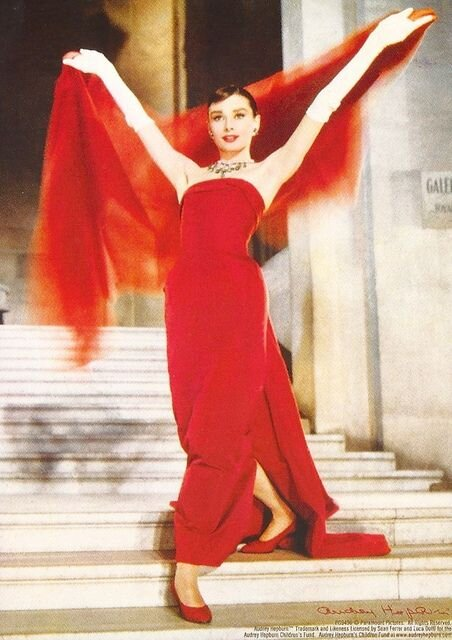
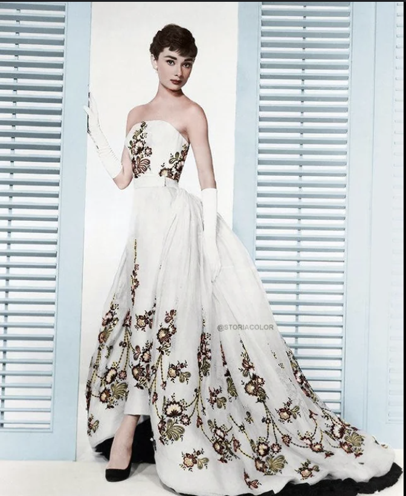

Women's clothing in the 1950s was characterized by a return to femininity and elegance, heavily influenced by post-war optimism and cultural icons. The decade saw the rise of the hourglass silhouette, often accentuated by cinched waists and full skirts, epitomized by the designs of Christian Dior's "New Look." Dresses, often adorned with vibrant floral patterns or polka dots, became popular for both daytime and evening wear. Women embraced tailored blouses and A-line skirts for a polished look, while casual styles like capri pants and fitted sweaters emerged, reflecting a more relaxed, yet stylish approach to everyday fashion. Accessories such as gloves, pearls, and hats completed the ensemble, reinforcing the era's emphasis on sophisticated femininity and grace. This period not only celebrated traditional gender roles but also began to hint at the evolving social dynamics that would shape the decades to come.